Dưới sự quản lý của Đoàn Thanh niên và Hội Sinh viên, trường Đại học Kiến trúc Hà Nội hình thành và phát triển rất nhiều CLB nhằm mục đích tạo môi trường thân thiện, thuận lợi cho các bạn sinh viên giao lưu học hỏi và hoàn thiện về nhiều mặt.
Hiện nay toàn trường có 18 CLB trực thuộc Hội Sinh Viên với nhiều lĩnh vực từ học tập, thể thao, âm nhạc, ảnh cho đến các hoạt động tình nguyện, hội đồng hương sinh viên.
Các CLB của sinh viên Đại học Kiến trúc Hà Nội được hoạt động dưới
sự định hướng và hỗ trợ của Đoàn Thanh niên và Hội Sinh viên
trường, trong đó Hội Sinh viên đóng vai trò thường trực.
Các CLB nói riêng và các đơn vị trực thuộc Hội Sinh viên luôn hoạt
động rất tích cực, làm tốt vai trò cầu nối giữa các bạn sinh viên
trong và ngoài trường
Bên cạnh những hoạt động cải thiện, nâng cao năng lực, kỹ năng cho các thành viên, các CLB đã thực hiện tổ chức nhiều chương trình hay và bổ ích góp phần quảng bá cho hình ảnh sinh viên của trường.
1. CLB Guitar (GKT)
Nếu bạn đam mê guitar hay yêu thích ca hát, muốn được giao lưu kết bạn, cùng nhau vui chơi tới bến và thỏa mãn niềm đam mê thì đây chính là nơi dành cho bạn đó.
Facebook: CLB Guitar Kiến Trúc 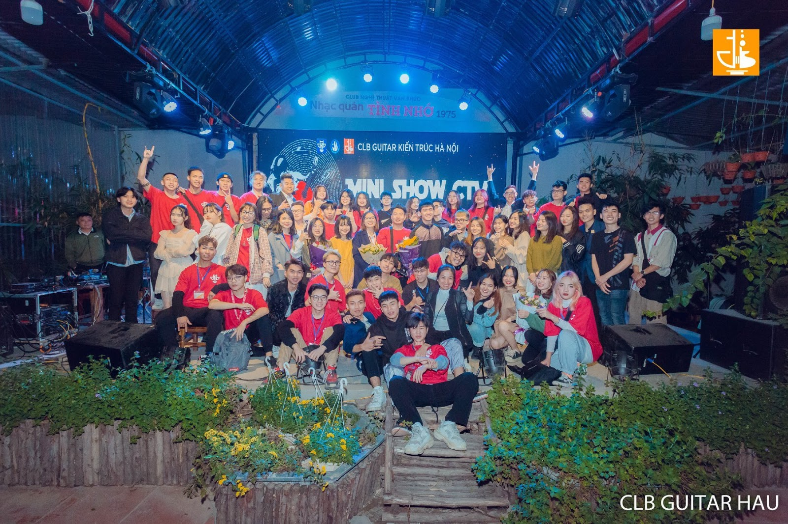2. CLB Harmonica (HAC)
Nơi chia sẻ các vấn đề về Harmonica, bên cạnh đó là các buổi sinh hoạt, tập luyện vui vẻ cùng nhau.
Facebook: Clb Harmonica HAC (đội kèn tí hon) 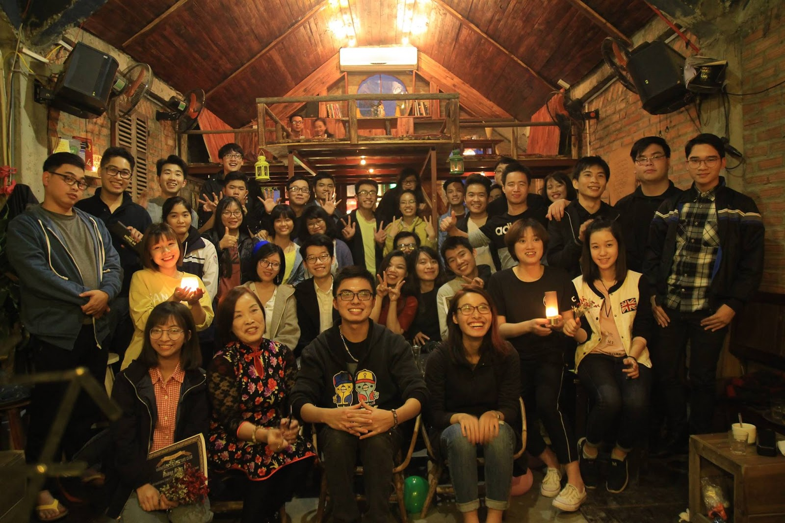3. CLB Rock (ARC)
Nơi các bạn sinh viên kết nối với nhau bằng tình yêu nhạc Rock.
Facebook: Rock Kiến Trúc 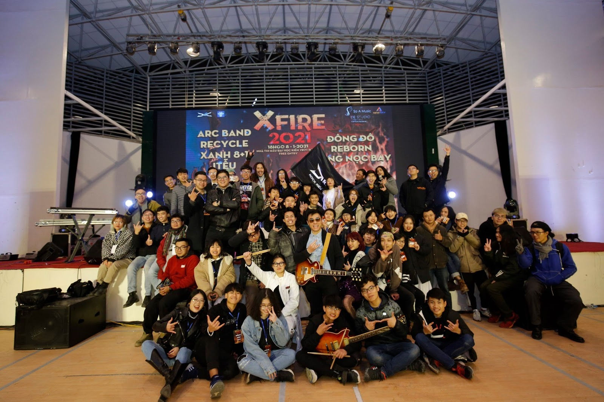4. CLB Sáo Trúc
Ai yêu thích sáo thì đừng bỏ qua CLB Sáo Trúc nha. Bên cạnh việc luyện tập chuyên môn thì các thành viên còn cùng nhau tận hưởng những khoảng thời gian vui chơi xả stress sau những buổi học nữa đó.
Facebook: CLB Sáo Đại Học Kiến Trúc Hà Nội 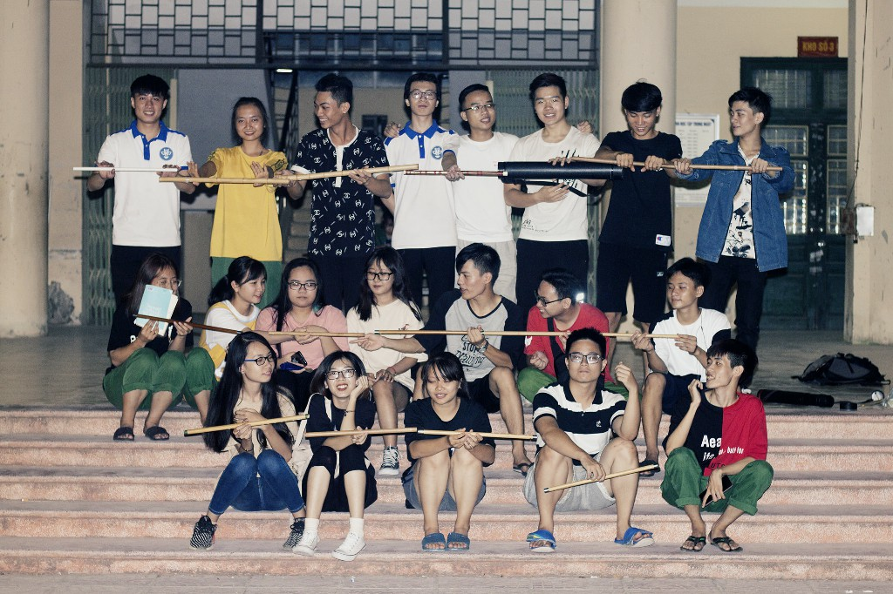5. CLB Ảnh
Bên cạnh chia sẻ những vấn đề xoay quanh ảnh thì CLB còn tạo sân chơi lành mạnh, tổ chức các chuyên mục liên quan đến sinh viên: ảnh nghệ thuật, Humans of HAU.
Facebook: Tạp chí Kiến Trúc Hà Nội - HAU Magazine 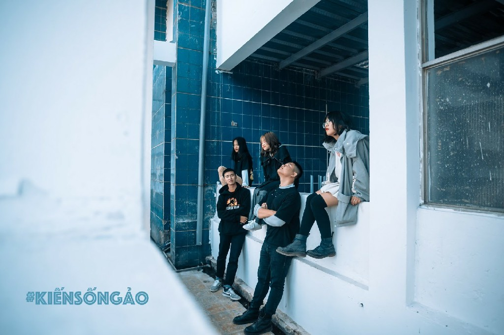6. CLB Dancing (UH Crew)
Nơi dành cho các bạn yêu thích bộ môn nhảy, được cùng nhau luyện tập, tham gia biểu diễn thể hiện bản thân và tỏa sáng.
Facebook: UH Crew - HAU's Dancing Club 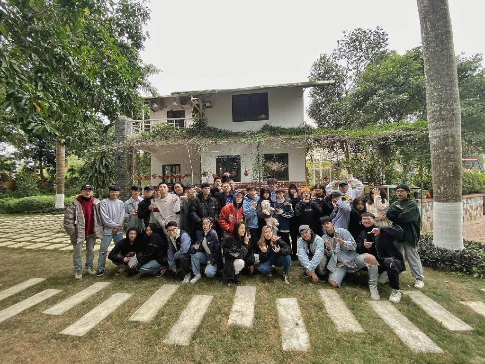7. CLB Âm nhạc
Tụ họp những thành viên đam mê âm nhạc và ca hát.
Facebook: CLB Âm Nhạc Đại Học Kiến Trúc Hà Nội 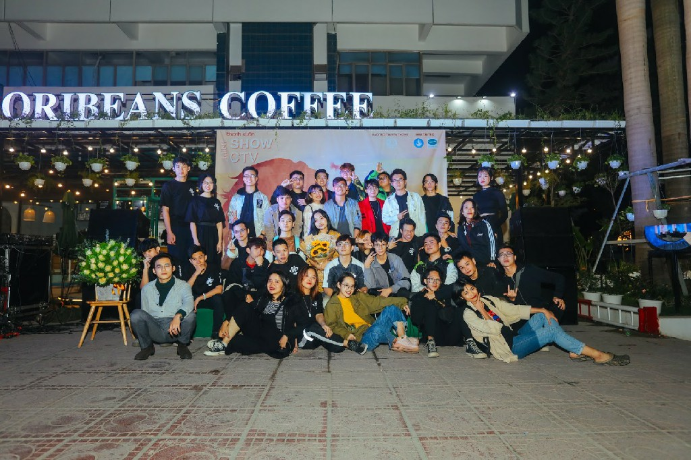8. CLB Bóng đá
Cùng nhau giao lưu kết bạn và thỏa mãn đam mê với trái bóng tròn.
Facebook: H.A.U Football Club9. Ban liên lạc sinh viên Thanh Hóa
Facebook: BLL sinh viên Thanh Hóa Đại học Kiến Trúc 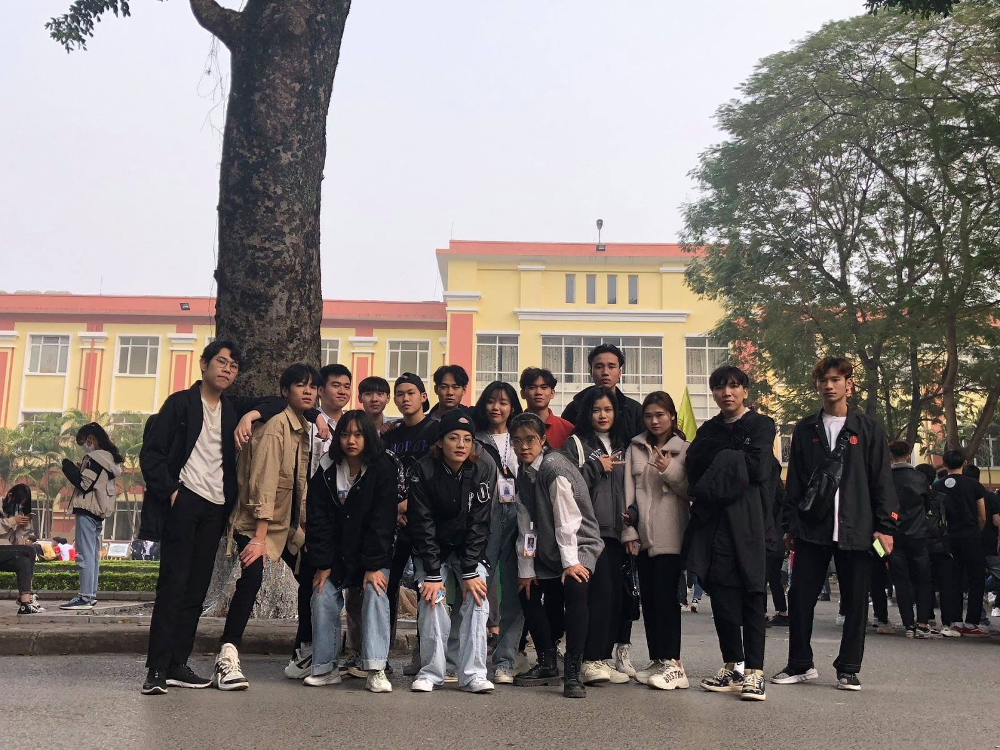10. Hội đồng hương Nghệ Tĩnh
Facebook: Hội Đồng Hương Nghệ Tĩnh HAU 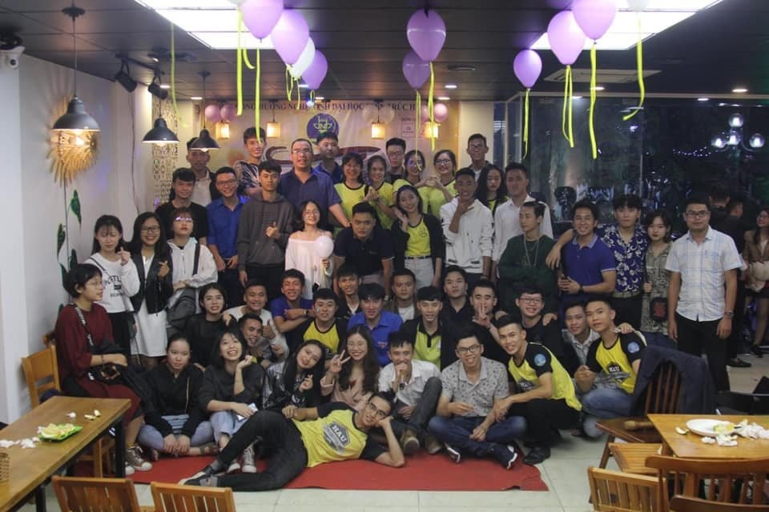11. CLB Sinh viên vận động hiến máu
Những ai có mong muốn được lan tỏa tình yêu thương trong cộng đồng đặc biệt thông qua việc hiến máu thì CLB là nơi dành cho bạn.
Facebook: CLB Sinh viên Vận động hiến máu trường Đại học Kiến trúc Hà Nội 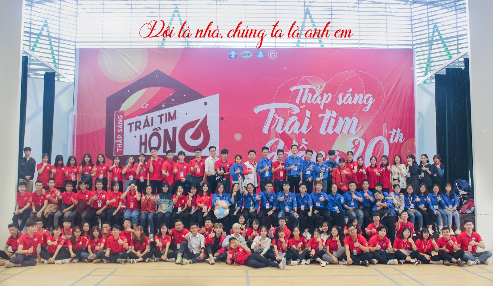12. CLB Kiến trúc trẻ
CLB học thuật với mong muốn đem đến sự kết nối giữa sinh viên với thầy, cô giáo, các Kiến trúc sư đi trước để học hỏi kinh nghiệm và trau dồi kỹ năng.
Facebook: Kiến Trúc Trẻ 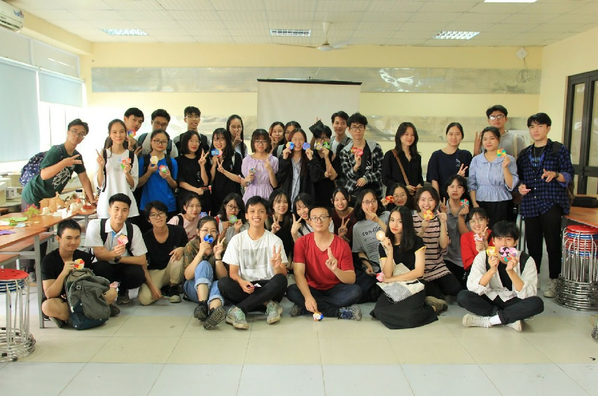13. CLB Mỹ thuật trẻ
CLB đem đến kiến thức chuyên môn đồng thời là chia sẻ kinh nghiệm, kỹ năng giữa các thành viên.
Facebook: CLB Mỹ thuật trẻ - ĐH Kiến trúc Hà Nội 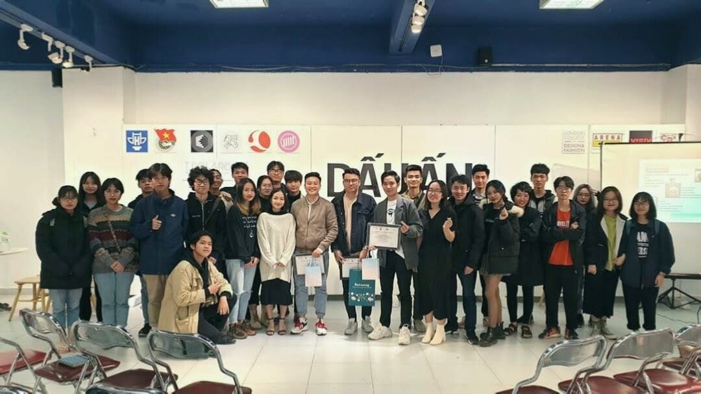14. CLB Quy hoạch trẻ
CLB giúp bạn nắm vững hơn kiến thức cho chuyên ngành và nghề nghiệp sau này.
Facebook: CLB Quy Hoạch Trẻ - HAU 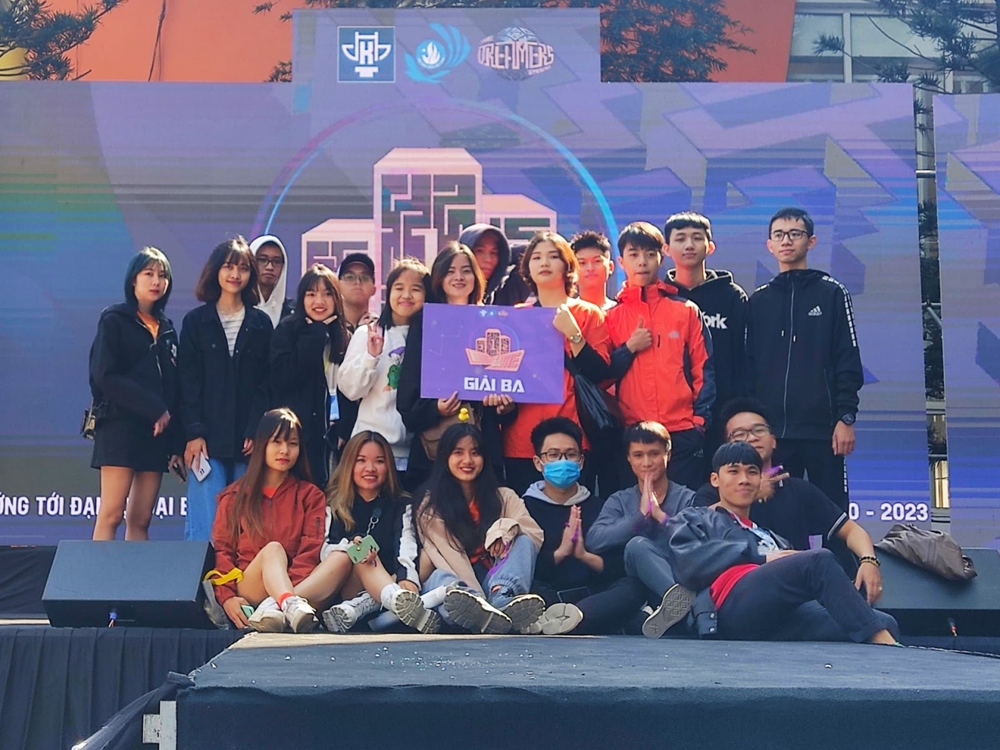15. CLB Đô thị xanh
Nếu bạn yêu thích một không gian xanh, muốn tham gia các hoạt động bảo vệ môi trường và học thêm nhiều điều bổ ích về đô thị thì CLB luôn sẵn sàng chào đón bạn.
Facebook: CLB Đô Thị Xanh - Đại Học Kiến Trúc Hà Nội 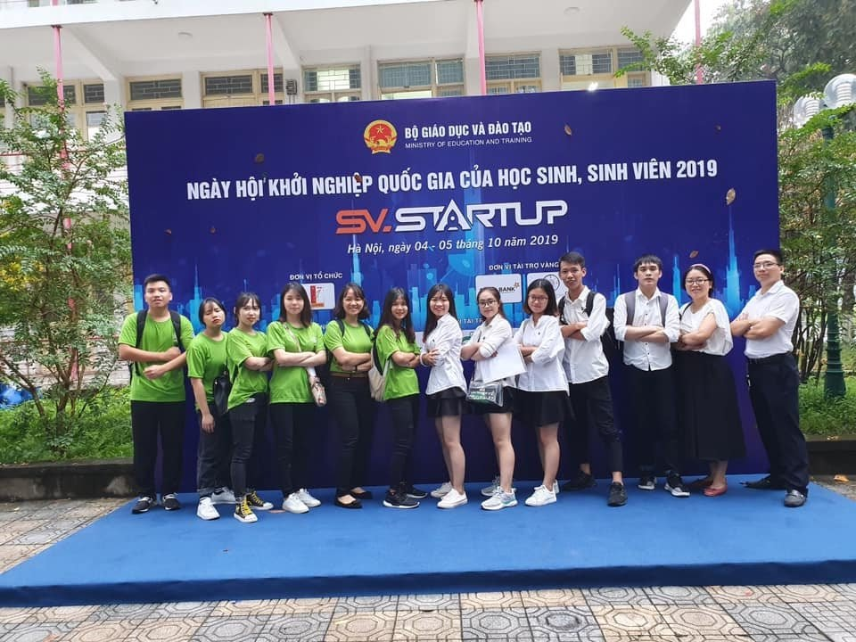16. CLB Quản lý đô thị
Nếu bạn yêu thích chuyên ngành này thì CLB là nơi vô cùng phù hợp dành cho bạn đó.
Facebook: Câu lạc bộ Quản Lý Đô Thị![[Có lỗi khi tải ảnh]](img/clb/clb_16.jpg)
17. CLB Khoa học xây dựng
Nơi dành cho những bạn sinh viên yêu thích ngành Khoa học xây dựng.
Facebook: Câu lạc bộ Khoa Học Xây Dựng S&C 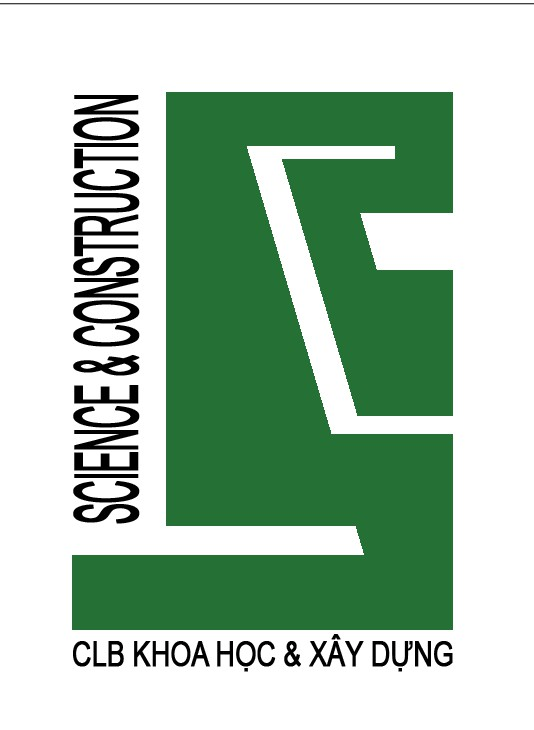 Logo CLB Khoa học xây dựng18. CLB Vật liệu xây dựng
Nếu bạn yêu thích chuyên ngành này thì CLB là nơi vô cùng phù hợp dành cho bạn đó.
Facebook: CLB VẬT LIỆU XÂY DỰNG (ĐH Kiến trúc HN) 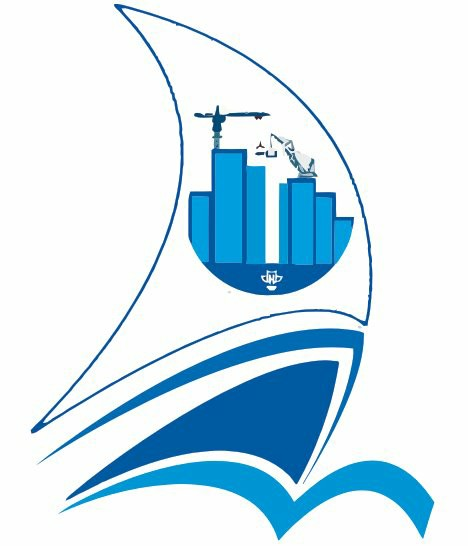 Logo CLB Vật liệu xây dựng
Đăng bởi Ngoc Duc
tham khảo thông tin từ
Hội sinh viên trường đại học Kiến Trúc Hà Nội,
hau.edu.vn
.